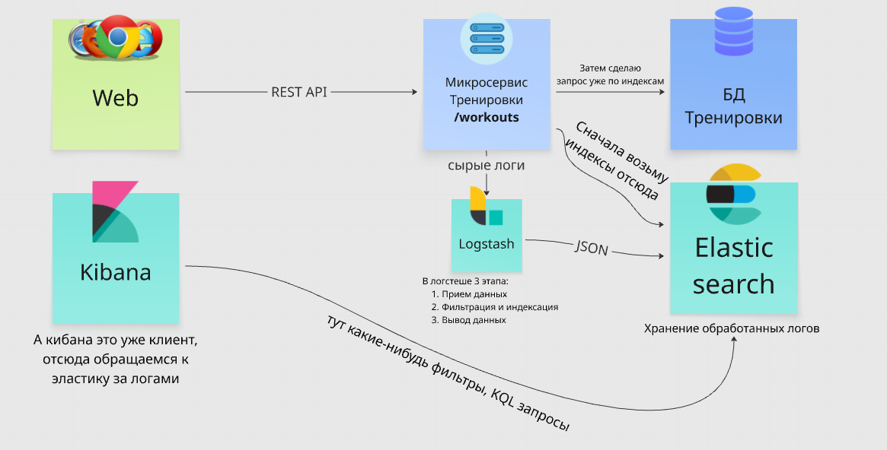

В этом уроке рассмотрим стек ELK (Elasticsearch, Logstash, Kibana), посмотрим как набор этих инструментов, интегрируемый в архитектуру продукта, оптимизирует работу на сторону бэкенда, делает бэк умнее, и дает возможность управлять обратной связью от бэка (логи). И именно с логами научимся работать, это важно при тестировании бэка.
Стек ELK — это набор трех взаимосвязанных инструментов:
– Elasticsearch: оптимизация поисковых запросов, данный инструмент разгружает БДшки тем, что берет часть работы БД на себя — хранит в быстром доступе индексы популярных запросов, что-то вроде отдельной умной БД-кэша. Про эластик посмотри видео ниже
– Logstash: по сути фильтр, которой способен парсить через себя большой объем данных (чаще всего логи) и упаковывать их в JSON для последующей передаче эластику/кибане
– Kibana: инструмент для удобной работы с логами (поиск, визуализирования), использует свой собственный язык запросов KQL (Kibana Query Language) и фильтры, есть некоторые инструменты для настраивания мониторов (например, для отслеживания 500-х ошибок на предпроде в конкретном эндпоинте после раскатки новой фичи)
Записи поведения системы, в нашем случае это записи бэка, некий журнал событий, которые происходили с бэком (например, ответ на запрос, или ошибка в каком-либо сервисе).
В рамках тестирования бэка, важно уметь пользоваться кибаной (минимально: зайти, найти нужные логи, выгрузить и прикрепить в баг-репорт, максимально: попытаться вникнуть в логи и разобраться в чем проблема), и в целом понимать как работает стек. Углубляться сильно не надо.
Посмотри видео. В логуру, графану и sentry не углубляйся, посмотри и можешь просто понять для чего это. Про кафку можешь посмотреть повнимательнее, это будет след урок. Сейчас внимание на кибану.

Представь такой флоу на воображаемом проекте:
/checkout, и допускается ответ либо 200 статус-код и фронт отрабатывает переход на оплату, либо 401 код (недействительная карта) — фронт обрабатывает ошибку и выводит сообщение, исходя из тела ответа (например, несуществующая карта)trace.idtrace.idИсходя из того, что ты узнал из общения с аналитиком:
– метод запроса POST
– путь ручки /checkout
– статус-код НЕ должен быть 200 или 401
– название города по геолокации клиента Frankfurt am Main
– дата This Week
– метод запроса POST: http.request.method is POST
– путь ручки /checkout: url.path is /checkout
– статус-код НЕ должен быть 200: http.response.status_code is not 200
– статус-код НЕ должен быть 401: http.response.status_code is not 401
– город клиента: client.geo.city_name is Frankfurt am Main
Посмотри какой статус-код пришел в запросе в логе, сравни с требованиями какие допускаются. В самом логе посмотри поле message, подумай что не так, какой из разрабов ответственнен за эту ошибку и как система должна себя вести.